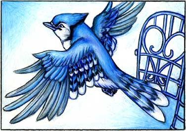

| It Could Happen... | Page 6 |
|
The first thing people asked was what about the Blue Jay. Had he stayed blue? Yes, he was still the same color. No longer were there two colors in the world, but just one -- the color blue. And because the Blue Jay was a color like everybody and everything else people began to lose interest. Now that he was neither more nor less important crowds stopped coming and one day, six months into the year that the world had turned blue, somebody let him out of his cage and he flew off looking happy to be free.  The very next morning the world regained its rainbow of colors as if nothing had ever happened. At first this was a novelty but soon people forgot the world had once been all violet. They forgot the world had once turned yellow, then orange, then pink, and then blue. They returned to saying they felt "blue" or were "green" with envy or had a "green" thumb. |
|
TURN THE PAGE | |
|||
| Go to page: 1 - 2 - 3 - 4 - 5 - 6 - 7 | |||||
| Back to Children's Storybooks Online | |||||
| Copyright ©1996 Carol Moore. Illustrations copyright ©2004 Carol Moore. All rights reserved. 041903422 | |||||